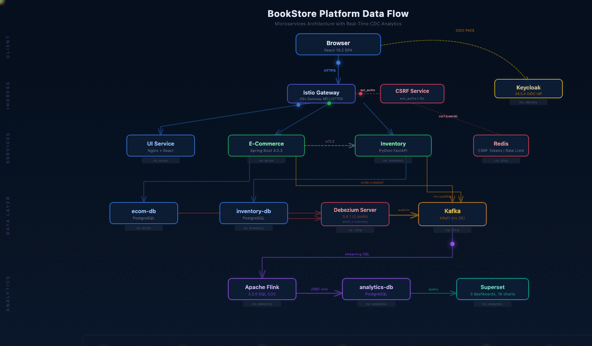

Preventing data loss, eliminating silent corruption, and adding operational visibility to the real-time analytics pipeline
The CDC (Change Data Capture) pipeline replicates every database change from the ecom and inventory PostgreSQL databases into a central analytics database in real time. Debezium Server reads the PostgreSQL WAL (Write-Ahead Log), publishes change events to Kafka, where Apache Flink transforms and loads them into a star schema for Superset dashboards.
Problem: The existing pipeline had a solid foundation but several critical gaps that would cause data loss, silent corruption, or operational blindness at production scale. This session addresses all of them.

backoffLimit: 0 — if SQL Gateway is temporarily unavailable, pipeline never startsbackoffLimit: 3 — retries on cold-start timing issuesfixed-delay restart: 10 attempts, 30s delay between retriesWhy: The Flink SQL Runner submits 4 streaming INSERT statements via SQL Gateway. During cold starts, the Gateway may not be ready when the Job runs. With backoffLimit: 0, the entire CDC pipeline fails permanently. The restart strategy prevents transient JDBC connection hiccups from killing long-running streaming jobs.
acks=all + retries=3 but no idempotent producerorder.created eventsmax.in.flight.requests.per.connection capenable.idempotence=true — broker deduplicates retried messagesmax.in.flight.requests.per.connection=5 — optimal for idempotent modeWhy: The ecom-service publishes order.created events on checkout. Without idempotency, a retry after a timeout could produce duplicate messages, leading to double-counted orders in analytics. Kafka's idempotent producer assigns sequence numbers for transparent deduplication.
kafka-exporter (v1.9.0) deployed in infra namespacekafka_consumergroup_lag per group, topic, and partitionflink-metrics-prometheus-1.20.0.jar baked into Flink imagesynced_at DEFAULT NOW() column exists in analytics tablesvw_cdc_latency view: latency_seconds = synced_at - created_atTwo new tables provide the schema for future data quality monitoring:
| Table | Purpose | Key Columns |
|---|---|---|
cdc_parse_errors | Captures malformed Kafka messages dropped by json.ignore-parse-errors=true | topic, raw_message, error_message, captured_at |
cdc_reconciliation_log | Source-to-analytics row count comparison for drift detection | table_name, source_count, analytics_count, drift, checked_at |
Four new Prometheus alert rules provide automated detection of CDC pipeline failures:
up{job=~"flink-*"} == 0
increase(...numberOfFailedCheckpoints[10m]) > 3
kafka_consumergroup_lag > 1000
kube_pod_status_ready == 0
Combined with existing alerts: These CDC-specific rules complement the existing ServiceDown, HighErrorRate, PodRestartLoop, and HighLatency alerts, providing full pipeline coverage from source databases through to analytics.
minAvailable: 1 PDB for debezium-server-ecomminAvailable: 1 PDB for debezium-server-inventorykind create cluster fails with opaque "port already allocated" errordocker stop required to find and stop conflicting containersfree_required_ports() auto-detects containers blocking any of 11 required portsDebezium Server 3.4 limitation: The Debezium Server image bundles OpenTelemetry Prometheus exporter JARs but does not include the Quarkus Micrometer extension. Setting quarkus.micrometer.export.prometheus.enabled=true in application.properties is silently ignored — /q/metrics returns 404.
Mitigation: Consumer lag (the most critical metric) is now tracked via kafka-exporter. Pod readiness is monitored via kube_pod_status_ready. Full Debezium JMX metrics require a jmx_exporter sidecar container (deferred to a future session).
The e2e/cdc-hardening.spec.ts file provides 50 tests across 9 suites, all passing:
| Suite | Tests | What It Validates |
|---|---|---|
| Flink Restart Strategy & Resilience | 7 | backoffLimit, fixed-delay config, tolerable checkpoints, EXACTLY_ONCE, 4 running jobs |
| Kafka Producer Idempotency | 2 | Pod running, Spring Boot health check (validates config loaded) |
| Kafka Consumer Lag Exporter | 6 | Pod, service, Prometheus metrics, consumer group lag, topic metrics, NetworkPolicy |
| Debezium Health & Observability | 6 | /q/health UP on both instances, /q/health/ready UP, Kafka-backed offset storage |
| Flink Prometheus Reporter | 7 | Config, container ports, service port, live metrics accessibility, NetworkPolicy |
| CDC Latency & Data Quality Tables | 6 | vw_cdc_latency view, cdc_parse_errors schema, cdc_reconciliation_log schema |
| CDC Prometheus Alert Rules | 8 | All 4 alert rules present, all 3 scrape configs present |
| Debezium PDBs | 4 | PDB existence, minAvailable=1, correct pod selectors |
| Pipeline End-to-End Health | 6 | Debezium UP, Kafka reachable, 4+ Flink jobs, analytics data, PVC bound |
| File | Change |
|---|---|
analytics/flink/Dockerfile | Added flink-metrics-prometheus-1.20.0.jar |
analytics/schema/analytics-ddl.sql | cdc_parse_errors, cdc_reconciliation_log tables, vw_cdc_latency view |
ecom-service/.../KafkaConfig.java | Idempotent producer (enable.idempotence + max.in.flight) |
infra/debezium/debezium-server-*.yaml | Documented Micrometer limitation |
infra/flink/flink-cluster.yaml | Restart strategy, Prometheus reporter, port 9249 |
infra/flink/flink-sql-runner.yaml | backoffLimit: 0 → 3 |
infra/kafka/kafka-exporter.yaml | New — Deployment + ClusterIP Service |
infra/kubernetes/network-policies/*.yaml | kafka-exporter + Flink metrics scraping rules |
infra/kubernetes/pdb/pdb.yaml | 2 new Debezium PDBs |
infra/observability/prometheus/prometheus.yaml | 3 scrape configs + 4 CDC alert rules |
scripts/up.sh, scripts/cluster-up.sh | free_required_ports() function |
scripts/infra-up.sh | kafka-exporter deploy step |
e2e/cdc-hardening.spec.ts | New — 50 E2E tests |
| Item | Why Deferred |
|---|---|
| Debezium JMX Prometheus exporter sidecar | Requires custom sidecar; kafka-exporter covers consumer lag |
| Kafka multi-broker HA (RF=3) | Resource-intensive; requires StatefulSet migration |
| Schema Registry wiring | Deployed but unused; needs Debezium custom image |
| Flink JobManager HA | Requires RBAC for ConfigMap/lease management |
| Reconciliation CronJob | Schema ready; CronJob implementation pending |
| Transactional outbox pattern | Significant refactoring of checkout flow |